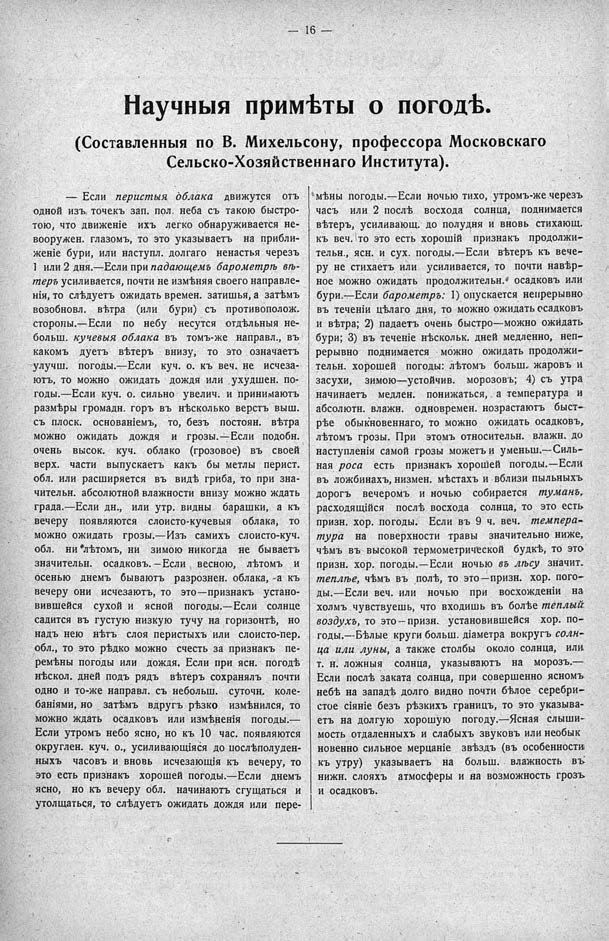

Лист источника 62
Скан

Распознанный текст
— 16 —
Научныя примѣты о погодѣ.
(Составленныя по В. Михельсону, профессора Московскаго
Сельско-Хозяйственнаго Института).
— Если перистыя облака движутся отъ
одной изъ точекъ зап. пол. неба съ такою быстро-
тою, что движеніе ихъ легко обнаруживается не-
вооружен. глазомъ, то это указываетъ на прибли-
женіе бури, или наступл. долгаго ненастья черезъ
1 или 2 дня.—Если при падающемъ барометрѣ вѣ-
теръ усиливается, почти не измѣняя своего направле-
нія, то слѣдуетъ ожидать времен. затишья, а затѣмъ
возобновл. вѣтра (или бури) съ противополож.
стороны.—Если по небу несутся отдѣльныя не-
больш. кучевыя облака въ томъ-же направл., въ
какомъ дуетъ вѣтеръ внизу, то это означаетъ
улучш. погоды.—Если куч. о. къ веч. не исчеза-
ютъ, то можно ожидать дождя или ухудшен. по-
годы.—Если куч. о. сильно увелич. и принимаютъ
размѣры громадн. горъ въ нѣсколько верстъ выш.
съ плоск. основаніемъ, то, безъ постоян. вѣтра
можно ожидать дождя и грозы.—Если подобн.
очень высок. куч. облако (грозовое) въ своей
верх. части выпускаетъ какъ бы метлы перист.
обл. или расширяется въ видѣ гриба, то при зна-
чительн. абсолютной влажности внизу можно ждать
града.—Если дн., или утр. видны барашки, а къ
вечеру появляются слоисто-кучевыя облака, то
можно ожидать грозы.—Изъ самихъ слоисто-куч.
обл. ни лѣтомъ, ни зимою никогда не бываетъ
значительн. осадковъ.—Если весною, лѣтомъ и
осенью днемъ бываютъ разрознен. облака, -а къ
вечеру они исчезаютъ, то это—признакъ устано-
вившейся сухой и ясной погоды.—Если солнце
садится въ густую низкую тучу на горизонтѣ, но
надъ нею нѣтъ слоя перистыхъ или слоисто-пер.
обл., то это рѣдко можно счесть за признакъ пе-
ремѣны погоды или дождя. Если при ясн. погодѣ
нѣскол. дней подъ рядъ вѣтеръ сохранялъ почти
одно и то-же направл. съ небольш. суточн. коле-
баніями, но затѣмъ вдругъ рѣзко измѣнился, то
можно ждать осадковъ или измѣненія погоды.—
Если утромъ небо ясно, но къ 10 час. появляются
округлен. куч. о., усиливающіяся до послѣполуден-
ныхъ часовъ и вновь исчезающія къ вечеру, то
это есть признакъ хорошей погоды.—Если днемъ
ясно, но къ вечеру обл. начинаютъ сгущаться и
утолщаться, то слѣдуетъ ожидать дождя или пере-
мѣны погоды.—Если ночью тихо, утромъ-же черезъ
часъ или 2 послѣ восхода солнца, поднимается
вѣтеръ, усиливающ. до полудня и вновь стихающ.
къ веч. то это есть хорошій признакъ продолжи-
тельн., ясн. и сух. погоды.—Если вѣтеръ къ вече-
ру не стихаетъ или усиливается, то почти навѣр-
ное можно ожидать продолжительн. осадковъ или
бури.—Если барометръ: 1) опускается непрерывно
въ теченіи цѣлаго дня, то можно ожидать ссадковъ
и вѣтра; 2) падаетъ очень быстро—можно ожидать
бури; 3) въ теченіе нѣскольк. дней медленно, неп-
рерывно поднимается можно ожидать продолжи-
тельн. хорошей погоды: лѣтомъ больш. жаровъ и
засухи, зимою—устойчив. морозовъ; 4) съ утра
начинаетъ медлен. понижаться, а температура и
абсолютн. влажн. одновремен. нозрастаютъ быст-
рѣе обыкновеннаго, то можно ожидать осадковъ,
лѣтомъ грозы. При этомъ относительн. влажн. до
наступленія самой грозы можетъ и уменьш.—Силь-
ная роса есть признакъ хорошей погоды.—Если
въ ложбинахъ, низмен. мѣстахъ и вблизи пыльныхъ
дорогъ вечеромъ и ночью собирается туманъ,
расходящійся послѣ восхода солнца, то это есть
призн. хор. погоды. Если въ 9 ч. веч. темпера-
тура на поверхности травы значительно ниже,
чѣмъ въ высокой термометрической будкѣ, то это
призн. хор. погоды.—Если ночью въ лѣсу значит.
теплѣе, чѣмъ въ полѣ, то это—призн. хор. пого-
ды.—Если веч. или ночью при восхожденіи на
холмъ чувствуешь, что входишь въ болѣе теплый
воздухъ, то это—призн. установившейся хор. по-
годы.—Бѣлые круги больш. діаметра вокругъ солн-
ца или луны, а также столбы около солнца, или
т. н. ложныя солнца, указываютъ на морозъ.—
Если послѣ заката солнца, при совершенно ясномъ
небѣ на западѣ долго видно почти бѣлое серебри-
стое сіяніе безъ рѣзкихъ границъ, то это указыва-
етъ на долгую хорошую погоду.—Ясная слыши-
мость отдаленныхъ и слабыхъ звуковъ или необык
новенно сильное мерцаніе звѣздъ (въ особенности
къ утру) указываетъ на больш. влажность въ
нижн. слояхъ атмосферы и на возможность грозъ
и осадковъ.